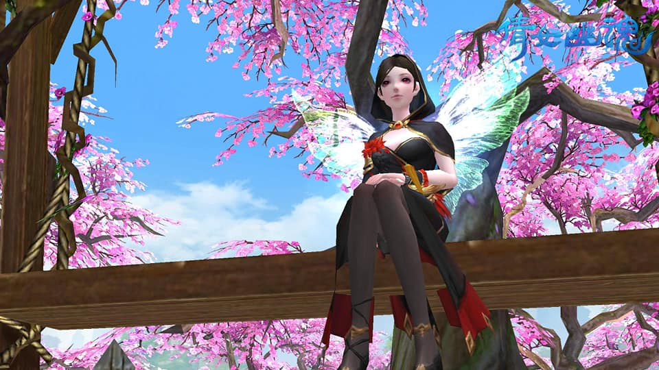

game introduction遊戲角色介紹
射手
聶秋鷹.蕭若蘭
遠程/物理/群攻
70絕：百步穿楊 100絕：流星箭雨
甲士

霍擊蒙.石云馨
進戰/物理/高防
70絕：河鼓.震 100絕：青龍.滅
方士


莫忘塵.納蘭青桑
遠程/法術/群攻
70絕：飄風振海 100絕：雷火無妄
醫師

步臨風.殷紫萍
遠程/法術/治療
70絕：懸壺濟世 100絕：十大功勞
魅者


冷月心.風搖箏
遠程/法術/控制
70絕：四邊靜 100絕：黃鶴繞碧樹
異人


葉葬花.花漸隱
遠程/法術/召喚
70絕：群魔亂舞 100絕：冥鳳臨世
刀客

卓斷水.楊夢言
進戰/物理/單攻
70絕：狡兔三窟 100絕：怒龍爪
俠客

洛昊空.沈傲霜
進戰/物理/輔助
70絕：五氣朝元 100絕：三花聚鼎
偃師

檀無心.阮煙羅
中程/物理/召喚
70絕：化地之能 100絕：極天之邪
畫魂

喬尋影.水凝墨
進戰/法術/彈道
70絕：畫龍點睛 100絕：天地留白
The picture of game遊戲內的截圖

在遊戲中遇到的好夥伴
在遊戲上遇到了很多很多形形色色的人，很多很多很棒的人！
這遊戲玩到現在也快3年了，其實覺得能撐下來的原因
大概就是遇到這些人吧！
這些人是使我在這遊戲繼續下去的動力 <3遊戲中的結拜們




遊戲中美美的畫面
充滿粉紅色花樹的地方，是遊戲裡一個名為『青丘』的場景，這場景十分的漂亮、夢幻，充滿著許多的桃花樹
when we meet at real當我們在線下見面時－色廊展

第一次的相見
第一次見到時趕到的尷尬感，不是因為互不熟悉，更不是因為沒有話講，
而是在展覽中遇到成堆的網美XD
倩女幽魂